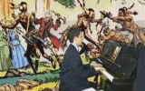
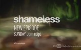

yabancı dizi
-
00:31
Once Upon A Time 4. Sezon Tanıtım Fragmanı
Once Upon A Time 4. Sezon Tanıtım Fragmanı Yayınlandı Yepyeni tanıtım filmi ilk defa izlesene.com'da
563 izlenme 2 ay önce -
00:36

The Walking Dead 5. Sezon 4. Bölüm Fragmanı
The Walking Dead 5. Sezon 4. Bölüm Fragmanı Yayınlandı Yeni Bölüm Adı: Slabtown Yaşayan ölüler diyarına hoş geldiniz! Kasabanın polis şefi Rick Grimes bir gün vurularak hastaneye kaldırılır; fakat o komadayken geçen sürede bildiği y
20.315 izlenme 5 gün önce -
01:07
Pretty Little Liars 3.Sezon 15.Bölüm Sneak Peek 2
yeni bölüm adı Mona-Mania! olarak belirlendi. Pretty Little Liars 3. Sezon 15. Bölümü ile 15 ocak 2012 salı akşamı ABC kanalında sizlerle...
1.219 izlenme 2 yıl önce -
04:00
IMDb'de En Çok Oylanan 10 Yabancı Dizi ! Top10 HD
Internet Movie Database (İnternet Film Veri Tabanı), kısaca IMDb, yeryüzündeki tüm ülkelerin ve tüm dönemlerin sinema ve televizyon filmleri, film yıldızları ve dizileri hakkında bilgiler barındıran çevrimiçi bir veritabanıdır. 500.000
1.407 izlenme 8 ay önce -
02:54

Yabancı Dizi Müziği GAME OF THRONES Piyano Enstrümantal TAHTLARIN OYUNU Giriş Film Müzikleri Ana
GÜNEŞ YAKARTEPE " Game Of Thrones CNBC e Televizyon Dizisi Film Müziği" Eserinin Senfonik (Çok sesli) Eşlik Notalarını ve armonilerini yazdı, Çalmakta olan Orkestraya eşlik ederek Akustik Piyano ile çaldı. Game of Thrones bugüne kadar yapı
7.987 izlenme 8 ay önce -
04:18
Gökhan Kirdar üstüme basip gecme (Yabanci Damat dizi muzik)
Gökhan Kirdar üstüme basip gecme Yabanci Damat dizi muzik
1.846 izlenme 2 yıl önce -
00:19

The Vampire Diaries 6. Sezon 6. Bölüm Fragmanı
The Vampire Diaries 6. Sezon 6. Bölüm Fragmanı Yayınlandı Yeni Bölüm Adı: The More You Ignore Me Bu kasabada her şey olabilir. Ölüp ölüp dirilebilir, bir vampir olabilir, bir cadının büyüsüne maruz kalabilir, hatta kurt adamlara kendi
7.191 izlenme 1 gün önce -
00:48
House Of Lies 2.Sezon 12.Bölüm Fragmanı
yeni bölüm ismi "Hostile Takeover'' olarak belirlendi. House of Lies 2. sezon 12. bölümü ile 7 nisan 2013 pazar günü showtime kanalında yer alacak...
116 izlenme 2 yıl önce -
00:48
House Of Lies 2.Sezon 11.Bölüm Fragmanı
Yeni Bölüm İsmi "hostile Takeover'' Olarak Belirlendi.house Of Lies 2. Sezon 11. Bölümü İle 31 Mart 2013 Pazar Günü Showtime Kanalında Yer Alacak.
61 izlenme 2 yıl önce -
03:53

Game Of Thrones'un Unutulmayan Sahnesi
Dünyayı kasıp kavuran ünlü dizi Game of Thrones yeni bölümleriyle yine gündemde.. Dizide Emila Clarke'in seksi sahneleri çok konuşulmuştu.
844.709 izlenme 2 yıl önce -
05:54

SON MOHİKAN Solo Piyano Film Müzikleri Fb Piano Sound Amerika Kızılderili Yerli Yabancı Sinema Dizi
Ecnebi Film Müzikleri solo Piyano Serisi: 4 Piyanist Güneş Yakartepe, LAST MOHİCAN SON MOHİKAN SOLO Sinema Tema Müziğini Polifonik Şekilde Akustik Piyano ile Enstrümantal çaldı. Eserleri Dinleyince Çok güzel ve değişik bulacaksınız. Ümi
2.213 izlenme 7 ay önce -
00:30

House Of Lies 2. Sezon 5. Bölüm Fragmanı
yeni bölüm ismi "Sincerity Is An Easy Disguise In This Business'' olarak belirlendi. House of Lies 2. sezon 5. bölümü ile 17 şubat 2013 pazar günü showtime kanalında yer alacak...
103 izlenme 2 yıl önce -
00:30
House Of Lies 2. Sezon 6. Bölüm Fragmanı
yeni bölüm ismi "Family Values'' olarak belirlendi. House of Lies 2. sezon 6. bölümü ile 24 şubat 2013 pazar günü showtime kanalında yer almaya devam ediyor...
63 izlenme 2 yıl önce -
00:35
House Of Lies 2. Sezon 9. Bölüm Fragmanı
yeni bölüm ismi "Liability'' olarak belirlendi. House of Lies 2. sezon 9. bölümü ile 17 mart 2013 pazar günü showtime kanalında yer almaya devam ediyor...
41 izlenme 2 yıl önce -
01:22

The Lying Game 2. Sezon 9. Bölüm The Lying Game 2. Sezon 9. Bölüm Fragmanı Sneak Peek 3
yeni bölüm adı ''The Grave Truth" olarak açıklandı. The Lying Game 2. Sezon 9. Bölümü 5 mart 2013 salı akşamı saat 8/9 arasında ABC Family kanalında izleyicileriyle buluşuyor...
97 izlenme 2 yıl önce -
04:32
efsane dizi yabancı damat
yabancı damat dizisi nazlı & niko
13.118 izlenme 4 yıl önce -
00:20
Being Human 3. Sezon 5. Bölüm Fragmanı
yeni bölüm ismi "Get Outta My Dreams, Get Into My Mouth olarak belirlendi. Being Human 3. Sezon 5. Bölümü ile 11 şubat 2013 pazartesi günü izleyicileriyle buluşmaya devam ediyor...
119 izlenme 2 yıl önce -
01:25
Nikita 3. Sezon 10. Bölüm Sneak Peek
yeni bölüm adı ''Brave New World'' olarak açıklandı. Nikita 3. Sezon 10. Bölümü ile 8 şubat 2013 cuma günü the CW kanalı ekranlarında yer almaya devam edecek...
115 izlenme 2 yıl önce -
00:20
Being Human 3. Sezon 7. Bölüm Fragmanı
yeni bölüm adı "One is Silver and the Other Pagan'' olarak belirlendi. Being Human 3. Sezon 7. Bölümü ile 25 şubat 2013 pazartesi günü izleyicileriyle buluşacak...
97 izlenme 2 yıl önce -
00:35
Hunted 1.Sezon 8.Bölüm Fragmanı (7.Kasım 2012)
yeni bölüm adı Snow Maiden olarak açıklandı. Hunted 1. sezon 8. bölümü ile 7 kasım 2012 cuma akşamı saat arası cinemax kanalında ekranlara gelmeye devam ediyor...
31 izlenme 2 yıl önce -
00:19
Revenge 2. Sezon 15. Bölüm Fragmanı
Yeni bölüm adı "Retribution" olarak açıklandı. Revenge 2. sezon 15. bölümü ile 24 şubat 2013 pazar günü izleyicileriyle buluşmaya devam ediyor...
1.045 izlenme 2 yıl önce -
00:29

Revenge 2. Sezon 14. Bölüm Fragmanı
Revenge Yeni bölüm adı "Sacrifice" olarak açıklandı. Revenge 2. sezon 14. bölümü ile 17 şubat 2013 pazar günü ekranlara gelmeye devam ediyor...
535 izlenme 2 yıl önce -
00:40
Shameless 3. Sezon 5. Bölüm Fragmanı
yeni bölüm adı "The Sins Of My Caretaker olarak açıklandı. Shameless 3. sezon 5. bölümü ile 17 şubat 2013 pazar akşamı showtime kanalında ekranlara gelmeye devam ediyor...
275 izlenme 2 yıl önce -
00:45

Shameless 3. Sezon 6. Bölüm Fragmanı
yeni bölüm adı "Cascading Failures' olarak açıklandı. Shameless 3. sezon 6. bölümü ile 24 şubat 2013 pazar akşamı showtime kanalında ekranlara gelmeye devam ediyor...
213 izlenme 2 yıl önce -
00:19
Nikita 3. Sezon 11. Bölüm Fragmanı
yeni bölümün adı ''Black Badge" olarak açıklandı. Nikita 3. Sezon 11. Bölümü ile 15 şubat 2013 cuma günü the CW kanalında ekranlara gelmeye devam edecek...
101 izlenme 2 yıl önce -
00:30
Girls 2. Sezon 4. Bölüm Fragmanı
yeni bölüm adı It's a Shame About Ray olarak açıklandı. Girls 2. Sezon 4. Bölümü ile 2 şubat 2013 cumartesi günü HBO kanalında izleyicileriyle buluşuyor...
78 izlenme 2 yıl önce -
00:29
Scandal 2. Sezon 13. Bölüm Fragmanı
Yeni bölümün ismi "Nobody Likes Babies" olarak açıklandı. Scandal 2. sezon 13. bölümü ile 7 şubat perşembe akşamı TV 14 'te izleyicileriyle buluşuyor...
51 izlenme 2 yıl önce -
00:15

Community 4. Sezon 2. Bölüm Fragmanı
Yeni bölümün adı "Paranormal Parentage'' olarak açıklandı. community 4. Sezon 2. Bölümü ile 14 şubat 2013 perşembe günü ABC kanalında yer almay devam ediyor...
33 izlenme 2 yıl önce -
01:27
Beauty And The Beast 1.Sezon 8.Bölüm Sneak Peek (6.Aralık 2012)
yeni bölüm adı Trapped olarak açıklandı. Beauty and the Beast 1. sezon 8. bölümü ile 6 aralık 2012 perşembe akşamı The CW kanalında yer almaya devam ediyor...
184 izlenme 2 yıl önce -
01:36

Revenge 2.Sezon 10.Bölüm Sneak Peek
Yeni bölüm ismi "Power" olarak belirlendi. Revenge 2.sezon 10.bölümü ile 9 aralık 2012 pazar günü ekranlara gelmeye devam edecek...
87 izlenme 2 yıl önce